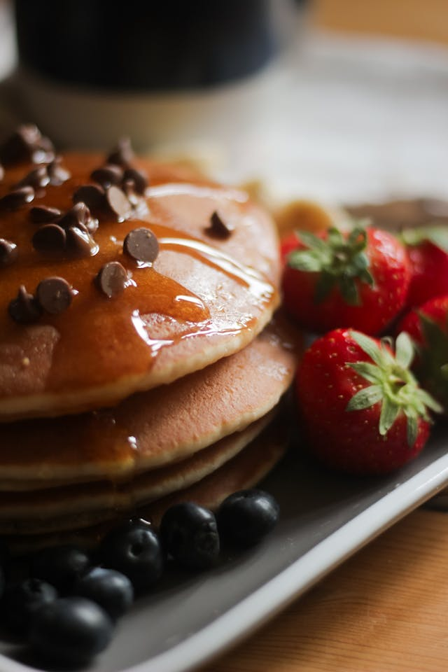

Pancakes

Photo Credit: pexels.com @nikki-awal
Description
Pancakes, Believe it or now are a dinner hit in my house.
Serve with fresh fruit and/or bacon. Serve with maple syrup.
Enjoy this treat that the fam will rave about!
Ingredients
- All-Purpose Flour (1 1/2cups)
- Baking Powder (3 1/2tsp)
- White Sugar (1tbsp)
- Salt (1/4tsp)
- Milk (1 1/4cups)
- Butter (3tbsp)
- Egg (1, large)
Steps
- Heat lightly oiled pan or griddle at medium-high heat.
- In large bowl mix dry ingredients together.
- Mix in wet ingredients until smooth.
- Pour batter onto pan using 1/4 cup for each pancake.
- Cook until bubbles form, about 2-3 minutes. Flip and repeat on other side.
Home